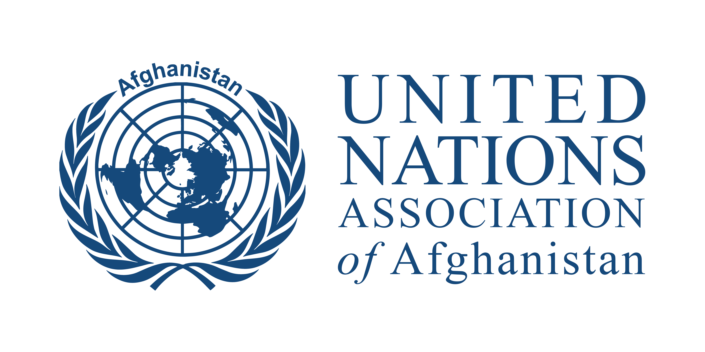

United Nations Association of Afghanistan
Role: Founder and President
Mandate: Bridging the UN with the locals, and locals to the world

At just 24, Yahya Qanie re-established the United Nations Association of Afghanistan (UNA-Afghanistan) after a 35-year absence. First founded in 1986, the association had dissolved amid prolonged internal conflict and the collapse of the government. Afghanistan was one of the few UN member states left without a national association advancing UN goals, so Yahya revived it, rebuilding it into a platform for public diplomacy (Track 1.5 and Track 2), civic education, and youth empowerment in peacebuilding and international affairs.
Under his leadership, the association advanced human rights, global norms, and the Sustainable Development Goals through public education and civic engagement programs for youth and women. It also became the institutional home of the Kabul Model United Nations, further embedding its grassroots impact.
Building the association was not simple. In a highly restrictive legal and political environment—including a national legal barrier on using “United Nations” and “Association” in NGO names—Yahya secured international legitimacy through endorsement from the World Federation of United Nations Associations (WFUNA) and authorization from the United Nations' legal department. However, the Afghan government continued to withhold formal domestic approval, despite repeated appeals to the President, Parliament, and the Ministries of Justice and Economy.
Though its operations ended with the 2021 collapse of Afghanistan's government. But the initiative exemplifies how youth-led, bottom-up diplomacy can reclaim civic space and instill democratic and multilateral values in fragile states—offering a rare case study in strategic resilience and visionary local-global engagement.